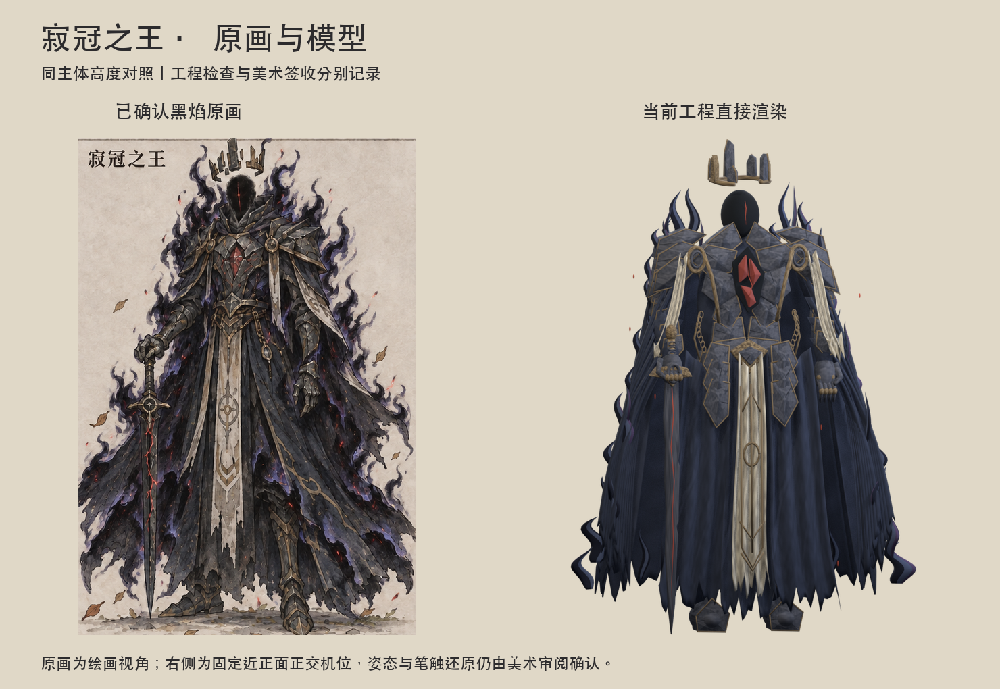
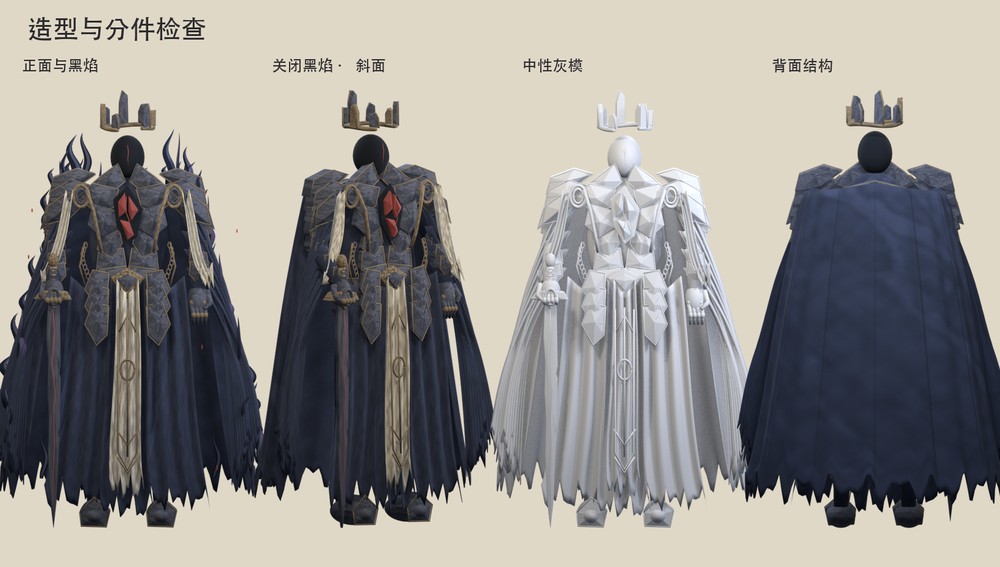
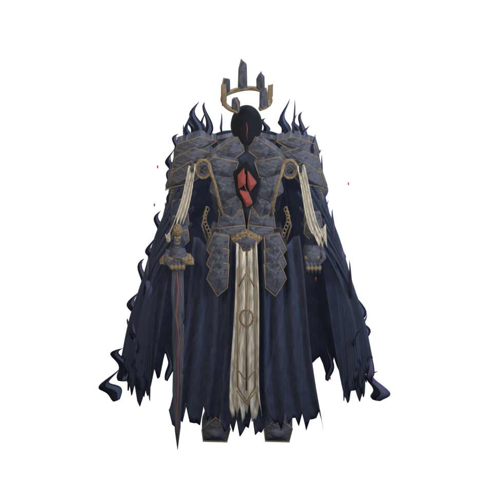
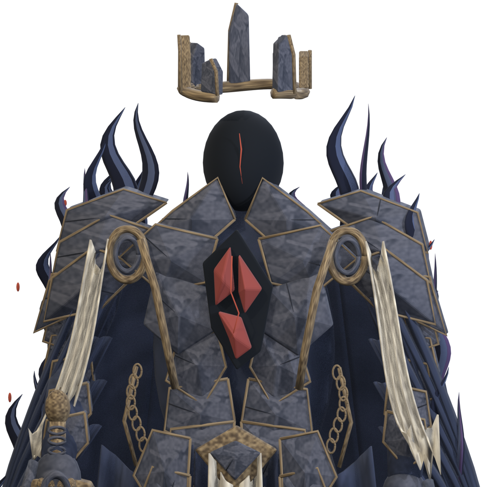
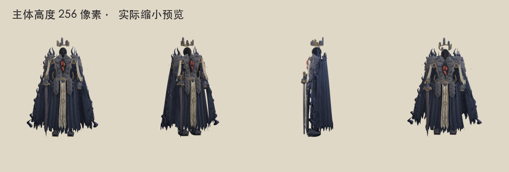
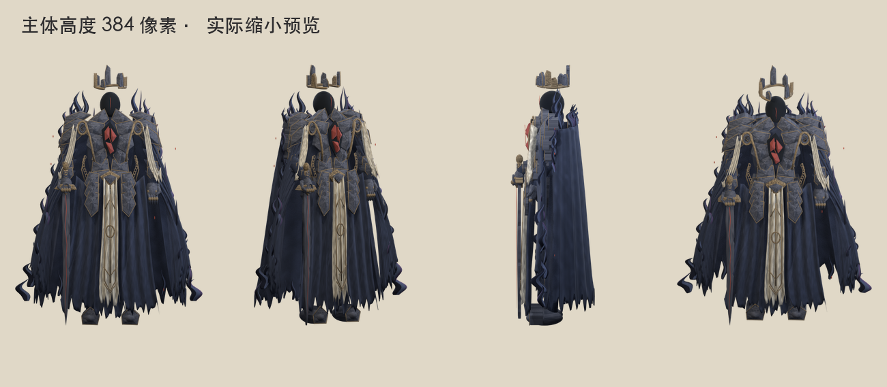
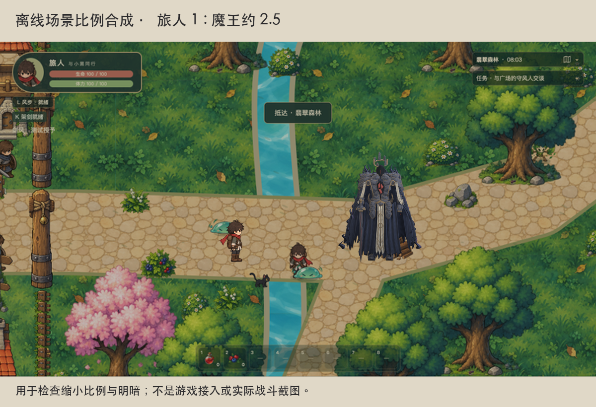
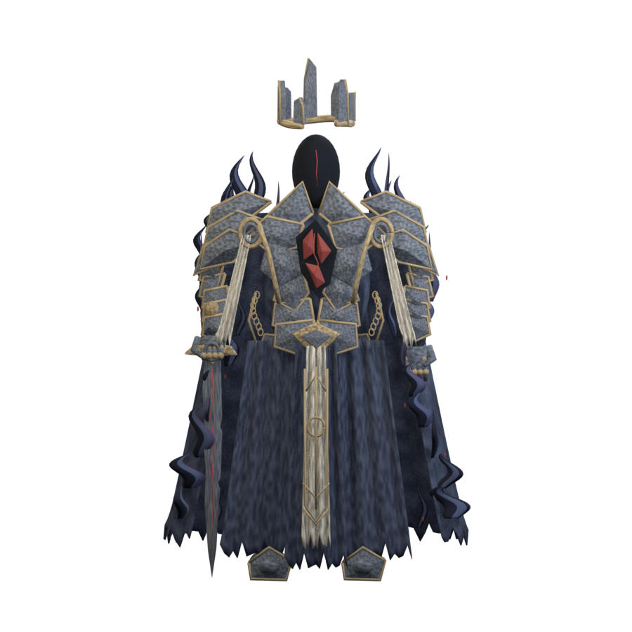
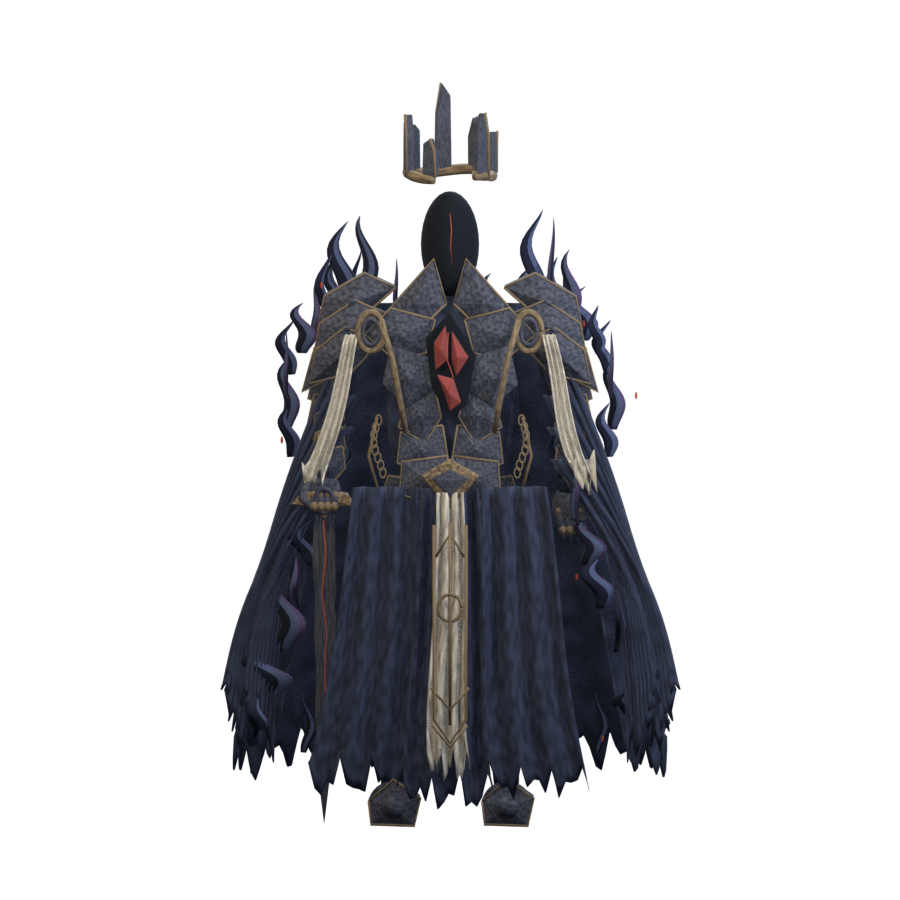
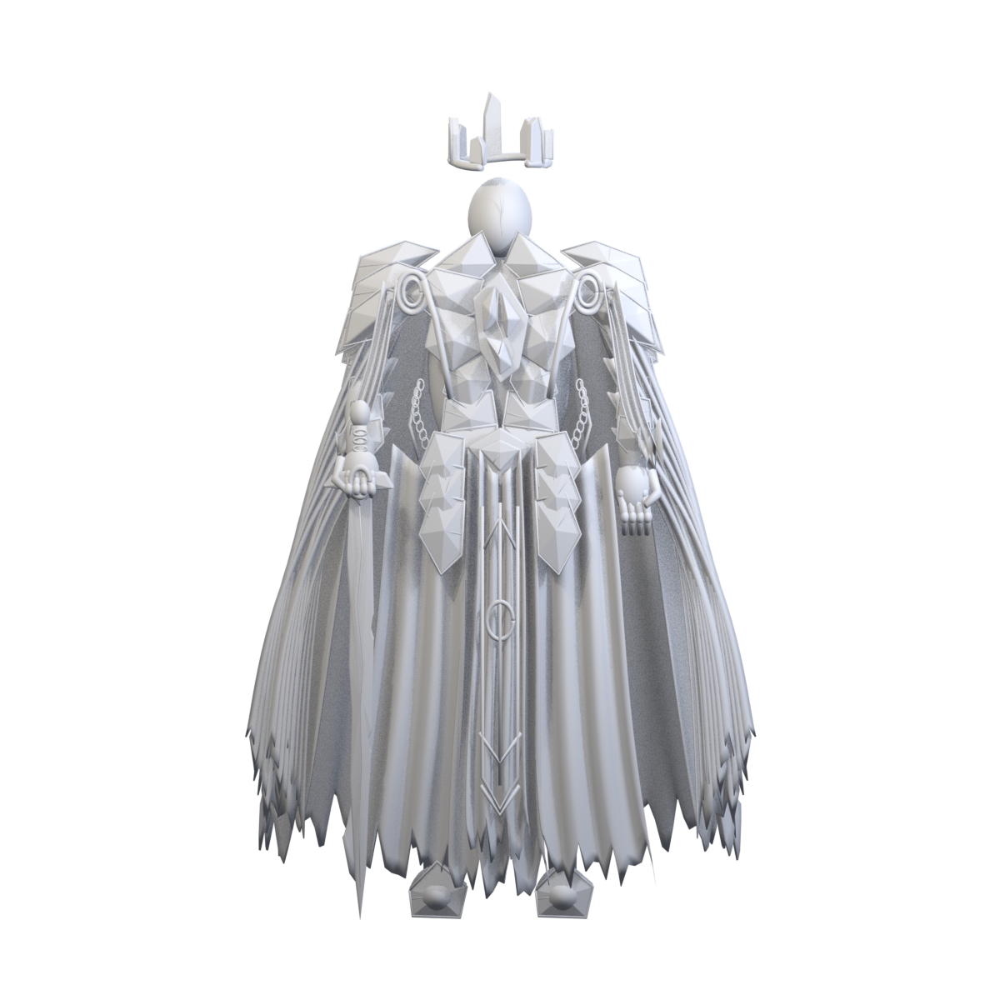

按已确认的黑焰版原画制作：七枚悬冠、无面、裂晶胸甲、缺刃王剑、三组前袍与侧背披袍。提供基础绑定、六秒黑焰待机与独立压力检查动作。下方模型画面由 Blender 工程直接渲染，源与交付副本另做像素一致性检查。


六秒待机：轻微悬浮、悬冠缓转、袍摆反向飘动与黑焰卷动。
四秒压力序列：抬臂、弯肘、扭腰、迈步。关闭黑焰；这是变形检查动作。

八个方向均为独立模型渲染，右手持剑关系一致。该角色存在不对称造型，后续导出应保留方向差异。






